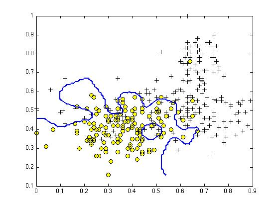

Suppose you have trained an SVM classifier with a Gaussian kernel, and it learned the following decision boundary on the training set:

When you measure the SVM's performance on a cross validation set, it does poorly. Should you try increasing or decreasing
it performs bad on validation, so its overfit on training. that means we need to add more regularization, ie lower C and increase sigma.
The formula for the Gaussian kernel is given by
The figure below shows a plot of
Which of the following is a plot of
sigma is smaller, which means that it will become more pointy.
The SVM solves
where the functions
The first term in the objective is: (see above)
This first term will be zero if two of the following four conditions hold true. Which are the two conditions that would guarantee that this term equals zero?
[ ] For every example with y(i)=0y^{(i)} = 0y(i)=0, we have that θTx(i)≤0\theta^Tx^{(i)} \leq 0θTx(i)≤0.
[x] For every example with y(i)=0y^{(i)} = 0y(i)=0, we have that θTx(i)≤−1\theta^Tx^{(i)} \leq -1θTx(i)≤−1.
[x] For every example with y(i)=1y^{(i)} = 1y(i)=1, we have that θTx(i)≥1\theta^Tx^{(i)} \geq 1θTx(i)≥1.
[ ] For every example with y(i)=1y^{(i)} = 1y(i)=1, we have that θTx(i)≥0\theta^Tx^{(i)} \geq 0θTx(i)≥0.
from notes:
Suppose you have a dataset with
After training your logistic regression classifier with gradient descent, you find that it has underfit the training set and does not achieve the desired performance on the training or cross validation sets.
Which of the following might be promising steps to take? Check all that apply.
[x] Create / add new polynomial features.
[x] Try using a neural network with a large number of hidden units.
[ ] Use a different optimization method since using gradient descent to train logistic regression might result in a local minimum.
[ ] Reduce the number of examples in the training set.
Which of the following statements are true? Check all that apply.
[x] The maximum value of the Gaussian kernel (i.e., sim(x, l1)) is 1. max value becomes exp(0) = 1
[x] Suppose you have 2D input examples (ie,
[ ] If the data are linearly separable, an SVM using a linear kernel will return the same parameters regularization does impact
[ ] If you are training multi-class SVMs with the one-vs-all method, it is not possible to use a kernel. why wouldnt it be